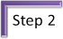

Reported or indirect speech

The first section mostly reiterates material in the initial training
section and is here as a reminder of the basics. You can skip this
if you are already aware of the basic issues or have recently worked
through the initial training section for this area.
If that is the case, skim through what follows, and/or do
the mini-test
or use this menu to go to the area you need and
then move on. It's up to you.
At the end of each section, you can click on -top- to return to this menu, simply read on, scroll back or bookmark the page for another time.
In what follows, we are going to consider four sorts of utterances which are often reported:
- Statements such as:
It is in the cupboard
which are usually reported with that-clauses - Questions such as:
When did you go?
which are usually reported with dependent wh-clauses - Exclamations such as:
What a lovely view!
which are usually reported with wh-clauses - Commands such as:
Get this done today
which are usually reported with to-infinitive clauses
 |
Consider these pairs |
| I was in London | He said he had been in London |
| I can help | She said she could help |
On the left we have the direct speech – the words uttered.
On the right we have reported or indirect speech – how the message
is passed on.
On the face of it, there's nothing terribly difficult about this
idea. The tense shifts back one (from, e.g., was to
had been, from can to could). At the same
time, I changes to he, we changes to they
and so on.
Here's a list of
the changes in English.
| Language item | Change |
| Present simple changes to past simple | I am in London He said he was in London |
| Past simple, present perfect and past perfect all come out as past perfect | I was in France She said she had been in France I have been to France She said she had been to France I had been to France She said she had been to France |
| Present progressive changes to past progressive | I am writing to
him He said he was writing to them. |
| Future 'will' changes to 'would' | I'll go later He said he'd go later |
| Future 'will be'+ ing changes to 'would be' + -ing | I'll be seeing
him tomorrow She said she'd be seeing him tomorrow |
| Future 'will have' + past participle changes to 'would have' + past participle | I'll have done
it He said he would have done it |
| Other changes | |
| Pronouns change as appropriate | I / We / want to be there I / He / She / We / They said I / she / he / we / they wanted to be there |
| Time and place expressions change as appropriate | I like it here She said she liked it there I am going tomorrow He said he was going the next day |
| Modal auxiliary verbs change to their 'past' equivalents if there is one | I may see him He said he might see him I must go now He said he had to go then |
A small but significant source of error in reporting in British
English is that the intrusive got in, for example:
I have got enough money
is dropped when the tense is backshifted so we get:
He said he had enough money
However, when the structure is used to express either:
- strong obligation as
in:
I have got to go now
the got may be retained and the reporting becomes:
He said he had got to go then - the sense of receive, as in:
I have got a letter from her
the got may also be retained and the reporting becomes:
She said she had got a letter from her
Deixis |
Here's a definition:
The name given to those aspects of language whose interpretation
is relative to the occasion of utterance
Fillmore (1966) in Harman (1989)
It's an important phenomenon in this area because the use of
deixis neatly explains a lot of the so-called anomalies of indirect
speech. Because meaning is dependent on the identity, point of view,
time and location of the speaker / writer we are
obliged (or not) to change, e.g., I to he or
she, we to they, bring to come, come
to go (and go to come), this
to that, here to there, yesterday to the
previous day, now to then, bring to take and
so on.
We make these changes because of a movement to the deictical centre.
This is usually I, now and
here so we make changes to allow for this.
There are three types of deixis which affect the way we report what
people say:
- Personal deixis:
We change pronouns to reflect who is addressing whom so we report, e.g.:
"Will you please come early?"
as any of
She asked me to come early
She asked him / her to come early
She asked you to come early
She asked them to come early
She asked [name(s)] to come early
depending on the context of who was addressed. - Spatial deixis:
When the reporting occurs at a different place, changes need to be made to reflect the fact so we can report, e.g.
"I am going to London"
as
She said she is coming to London
if the reporting happens to take place in London. If it takes place elsewhere, the verb will not need to change.
Equally, for the same reason we need to make changes when we report adverbials which may not hold true when the reporting happens so, e.g.: we report:
Please put it on the left
as
She asked me to put it on the right
if the reporter has moved.
When the reporting takes place at another time and place, other minor changes will occur because the use of demonstratives, in particular, becomes irrelevant so, for example:
I want that one
may be reported something like:
She said she wanted the one on the shelf
and
Is this the right train
may be reported as:
He asked if it was the right train
Spatial deixis also explains why- we often need to change bring to take when reporting in another place.
- we often need to change this to that and these to those (and vice versa)
- Temporal deixis:
When reporting times, we need to consider that most people will expect any utterance to be centred on now so we make the appropriate changes as in, e.g., reporting:
"I want to see you this afternoon"
as
She asked to see me that afternoon
and
"I'm leaving next year"
as
She said she was leaving the following year
if the reporting takes place much later.
In this regard, the following changes now make more sense:
| Direct speech | Indirect speech | The movement of the deictical centre |
| "I want you to come to me now." | He said he wanted me to go to him then | From come to go, you to me, me to him and now to then (spatial personal and temporal deictical changes) |
| "I'll go next year," she said | She said she would go this year | From I to she and next year to this year (personal and temporal shifting) |
| "I want to bring this food with me," he said | He said he wanted to take that food with him | From this food to that food and from me to him (spatial and personal centre shifting) |
Once again, we find that context makes meaning.
For more, there is a guide to deixis on this site, linked below, which includes a larger image of the wheel above and explains what it all means.
Using common sense |
Of course, not all changes are always appropriate (but using the
changes will usually be correct).
If we are reporting something virtually simultaneously, then we often
don't change the tense or time expressions. If we are reporting
something in the same place, then we don't change the place expressions.
Another way of putting this is to refer to the encoding time (when
the statement was made) and the decoding time (when the statement
was reported). If the encoding and decoding times are the
same, few if any changes need to be made to time markers and tense
forms.
So we might get:
A: I'm going there now.
B: What did he say?
C: He said he's going there now
However, if the encoding and decoding times are
sufficiently separated, we do make changes accordingly so the
exchange might end as:
He said he was going there then.
If an utterance remains true, we often don't change the tense so we
get, e.g.,
I'm from South Africa =
He said he's from
South Africa
I love the countryside = She said she loves
the countryside
Try this matching exercise to make sure you have understood so far.
Did you notice the changes, particularly with time and place expressions but also with the verb come (which changed to go)?
If you have followed so far, this will be familiar:
| 1 | "I was in London," he said | 4 | He said he had been in London |
| 2 | "I can help," she said | 5 | She said she could help |
| 3 | "You are welcome to come. Would you like to bring Mary?" he said | 6 | He said I was welcome to come and would I like to bring Mary |
It's clear that we have examples of direct speech and indirect speech
here in sentences 1, 4, 2 and 5 but Sentence 6 is what is called a hybrid form because the first part follows the
'rules' but the second part actually changes only the pronoun, from
you to I.
If the sentence followed the reported speech 'rules', it should be
He said I was welcome to come and asked
if I would like to bring Mary
which is another possibility, of course, but sounds quite formal.
Reporting statements |
|
| "I'm here for the job" | She said that she was here for the job |
Statements or declarative utterances are routinely reported using that-clauses as in, for example:
| The road you need is the second on the left | → | He told me that the road I needed was the second on the left |
| That's Mary's son | → | She told him that that was Mary's son |
| I don't believe her | → | She said that she didn't believe her |
| They can't be here till 7 | → | She said that they couldn't be here till 7 |
| We want to know why it's here | → | They said that they wanted to know why it was there |
There are two things to notice even with the simplest type of reporting of direct statements.
- The omission of that.
All the examples in the table here include that. However, it can be and routinely is omitted (something which, incidentally, is not allowed in some languages which have a parallel structure).
When it is omitted, it is still, in technical terms a that-clause but referred to as a zero-that-clause, often written as Ø-that-clause.
When the clause is short and concise, that is conventionally ellipted so most users of English will prefer:
She said it's OK
rather than:
She said that it's OK
However, if the utterance is structurally heavy, including multiple adverbials, subordinated and coordinated clauses and other modifiers, it is usually stylistically inappropriate to ellipt that. For example, if we report:
Mary explained, "Up to now, I had always assumed the guy in the suit was the boss of the enterprise but now I see I was mistaken."
we would normally include that in indirect speech and have:
Mary explained that she had up to then she had always assumed that the guy in the suit was the boss of the enterprise but now she saw that she was mistaken. - Reporting verbs.
If we report something like:
"It's the switch on the left," explained Peter.
we may choose to structure the report differently and simply have:
Peter explained which switch it was
rather than the more tortuous:
Peter explained that it was the switch on the left.
There is more on reporting verbs below.
Incidentally, the rule for ordering in direct speech is that you
cannot reverse the verb and subject pronoun but you can reverse a
noun or noun phrase subject and verb. We allow, therefore:
"That's the bus," said John
and
"That's the bus," John said
and
"That's the bus," he said
but
"That's the bus,", said he
is now hopelessly archaic.
 |
Reporting closed questions with if and whether |
| "Were you there on the night?" | They asked whether I was / had been there on the night |
Closed questions are those which require a Yes or No response and
they are usually reported with if or whether. We
get, therefore, for example:
Are you going to the cinema?
reported as
He asked her if she was going to the cinema
There is a bit more to it, however.
Consider what direct speech is being reported in the following.
- I asked whether there were any good recipes in it.
- I asked if there were any good recipes in it.
- She wondered whether to go.
- He asked whether or not they could come.
When you have done that, try reporting these sentences (from the
point of view of later and
elsewhere).
Then click to
reveal the comment.
- “Are they English?” she asked
- “Are they English?” he wondered
- “I’m wondering whether to join you.” she said
- "Can I talk to you?" asked Mary
You should have something like:
- "Are there any good recipes in it?" I asked
- "Are there any good recipes in it?" I asked
- "Shall I go?" she wondered / asked herself
-
"Can they come?" he enquired
- She asked whether / if they were English
- He wondered whether they were English
- She was wondering whether to join us
- She asked whether / if she could speak to me
In reporting a direct question, you can use if or whether interchangeably but if you are reporting someone's thoughts and doubts, only whether is usually the choice.
The other important thing to make sure that learners get right is the word ordering when reporting a question. There are three issues to consider:
- The word order in these clauses is the one we would expect
for a normal declarative statement. We have, e.g.:
I asked if he was coming
not
*I asked if was he coming - The do, does, did operator which is used for
forming questions in present and past simple tenses is not used
in a reported question. We have, e.g.:
I enquired if she worked in London
not
*I enquired if did she work in London - There is no reversal of subject and object with primary or
modal auxiliary verbs. We have, e.g.:
He wondered if she could manage the project
not
*He wondered if could she manage the project
Many languages do not work this way and the transfer from L1
to LT often produces
errors like:
*She asked were they English
*She wondered should she go
*They enquired whether did the train stop at Margate?
Reporting wh-questions |
|
| Who are you looking at? | It asked me who I was looking at |
Questions phrased using wh-words: who,
what, why, when, which, where, how cannot be predicted to have a
Yes-No-Maybe answer.
Questions formed in this way cannot be reported with if or
whether. The reporting is done by embedding the questions.
This means that reporting this type of question requires a different
word ordering from that used in reporting yes-no questions (see above)
and that is non-intuitive. Many learners, having struggled to get
the word ordering of yes-no questions right, logically transfer the rule
concerning not disturbing the natural word ordering to wh-questions with resulting error. We can get, therefore:
*She asked me where is the station
*They enquired when are we coming
*She asked what did I do for a living
etc.
Embedding is often associated with polite questioning so, instead of
the direct:
Where is the station?
we form polite embedded questions such as
Can you tell me where the station is?
So it is with reported questions. Thus:
| Where is the station? | → | He asked me where the station is / was |
| What is the time? | → | She asked me what the time was / is |
| When are you arriving? | → | He asked me when I was / am arriving |
| Who is coming with you? | → | She asked them who was / is coming with them |
| Why are they late? | → | She asked why they were / are late |
The tense chosen will often conform to the time and place of the reporting using the common-sense rules discussed above although back-shifting tenses where possible is common even when the reporting is virtually simultaneous.
The big issue for learners with this kind of reporting is the
ordering of the subject and verb. Most first languages will lead learners
to produce errors such as:
*Can you tell me when is the film beginning?
*Do you know who is the lady there?
etc.
And this will also carry over to reported questions so we get:
*She asked me where is the zoo
*They enquired what time did the train leave
and so on.
Other reporting verbs such as explain, clarify, complain,
mention, remember and state will produce similar errors
because the structures are parallel to reported questions in English but
not parallelled in many other languages. We may encounter,
therefore:
*She explained how did the machine work
*They clarified what did they need
*I remembered where was I going
There is more on the quirky nature of some reporting verbs below.
 |
Disturbing the word order |
If the direct question is formed with who, which or what with the verb be as part of the predicate, it is possible to disturb the word order outlined above. For example, the following can be reported in two ways, like this:
| Who was the winner? | → | She asked me who the winner was | or | She asked me who was the winner |
| Which were the fastest cars? | → | She asked me which the fastest cars were | or | She asked me which were the fastest cars |
| What were his friends doing? | → | She asked me what his friends were doing | or | She asked me what were his friends doing |
However, the word ordering with the reversal of subject and verb is always correct, so, for teaching purposes, that is the way to go. Your learners may, however, encounter this disturbance so it's as well to be prepared for it and note that it only occurs in the limited circumstances set out here.
The disturbed word order is, however, always
conventional when the question involves be as a simple
copula with an adjectival attribute. So, for example:
Which is best?
is reported as:
She asked which was best
not as:
*She asked which best was
 |
that and what |
What are the rules for using that and what in reported speech? Report the following using that or what if possible and then reveal the commentary.
- "I am coming now."
- "I don't know her name."
- "What's your name?"
- "My name is Mary."
- "I will not go if it rains"
Rule 1: you can't use that in reporting questions or
if-clauses.
So we can have:
He said (that) he was coming then / is coming now
She said (that) she didn't / doesn't know her name
She said (that) her name is / was Mary
but not:
*He asked that is her name
*She said she would not go that if it
rained
Rule 2: Conditional sentences may be back-shifted but that may not be
used in them.
At all other times, that can be dropped with no loss of sense, but some
loss of formality.
On the dropping or not of that with bridge and non-bridge
verbs, see below.
Rule 3: to report open questions,
we have choices. We can't use that
but we can, with a change to an embedded question, use what:
He asked her her name /
He asked her what her name was
but not, usually:
?He asked her what was her name
 |
Tense shifting |
As we saw in part 1 of this guide, tense shifting is common in English and it is rarely wrong to do it. However:
- If the reporting verb is in the present, we don't shift
tenses. So we get
She often says, "I don't know what to do"
changing to
She often says she doesn't know what to do
"There was a nasty accident here last night," John informs me
changing to
John tells me there was a nasty accident here / there last night.
(Note that last night does not change because the reporting is of a recent utterance.) - If the validity of what was said still holds. For
example:
Darwin wrote, "There is grandeur in this view of life."
changes to
Darwin wrote that there is grandeur in this view of life.
not to
Darwin wrote that there was grandeur in this view of life - Although back-shifting could be used in all the above
examples, there are rare times when it actually produces
nonsense. Try reporting
"I chose to study French because it was a beautiful language."
Will you accept
He said he had chosen to study French because it had been a beautiful language?
 |
Reporting commands and exclamations |
We saw above that question forms are reported differently from statements. How would you report these? Click here to reveal some comments.
- "What awful weather!" she exclaimed.
- "Stop fidgeting!" she said to John.
- "Stop fidgeting," she growled.
Sentence 19 could be rendered as
She
exclaimed / said / remarked loudly what awful weather it was.
It can't be reported without a change of grammar.
Sentence 20 can be reported as
She told John to
stop fidgeting but ...
Sentence 21 can't be reported this way. It
has to be something like
She growled at John to stop fidgeting
Note that we have to insert the object here.
 |
Reporting verbs |
Essentially, there are three types. Can you categorise this list into three groups? Click to reveal, as usual.
| say | cry | ask |
| tell | order | offer |
| invite | shout | explain |
The simple reporting verbs in the left-hand column often require only the deixis, pronoun and tense shifts covered in this guide. So we can have, e.g.:
| "I'm off tomorrow," she said | → | She said she was / is off the next day / tomorrow |
| "I'm studying Chemistry," he told me | → | He told me he is / was studying Chemistry |
Sometimes, however, in order to retain the sense, we need to make more fundamental changes to the syntax, such as:
| "Go away," she said | → | She told / ordered me to go away |
| "Read a book," he sneered | → | He told him sneeringly to read a book |
| "I'm sorry," he said | → | He apologised |
| "I guess around £200," he said | → | He estimated it at around £200 |
| "But that's not true," he interrupted | → | He interrupted to say that it wasn't / isn't true |
| "Please help," she pleaded | → | She pleaded for help |
| "Are there any questions?", he said | → | He invited questions from the audience |
It is possible roughly to divide reporting verbs
into three overlapping categories, like this:
in which the verbs are arranged in relation to the strength
of the statement made so, for example:
"I must have the steak," she said
could be reported as:
She insisted on having the steak
and
"I'd like the steak," she said
as
She said she'd like the steak
but
"I wonder if I might have the steak," she
said
as
She enquired whether she could have the
steak
This has some pedagogical utility, of course, because it
gives learners a way of understanding the connotations of the
verbs.
However, the categories are not unarguable and
people will put different verbs in different boxes. It is a
rule of thumb at best.
 |
Reporting comment clauses |
Some reporting verbs are used to report an embedded or fronted
comment clause so, for example, something like:
"She is, as you well know, quite capable."
may be reported as:
He insisted that I knew that she was quite
capable.
Other comment clauses such as in:
"Well, to be honest, I don't have a clue."
and
"As you know, I've been living here for
years."
may be reported using an appropriate reporting verb but maintaining
the adverbial as:
He explained that he honestly didn't have a
clue.
or as:
He reminded me that he had been living there for years.
There is a difference in the way that such clauses are reported depending on the role of the disjunct adverbial.
- Style disjuncts express the speaker / writer's view of what
is being expressed and how it should be understood. So,
for example:
"Seriously, I don't think it will arrive in time."
expresses how the speaker wishes to be understood and may be reported as:
She seriously doubted whether it would arrive in time. - Attitude disjuncts indicate how generally the speaker wants
to be understood or what limitations apply and they are reported
using the same disjuncts usually (so are considerably easier to
form). For example:
"More or less, that's the same conclusion I arrived at."
and
"Administrationally, this is quite a simple matter."
can be reported simple as:
He said that it was more or less the same conclusion he had arrived at.
and
She said it was administrationally quite a simple matter.
Purely for information, there's a PDF of a list of reporting
verbs in English list which considers the syntactical restraints
concerned with them. The list also includes some consideration
of the functions of reporting verbs and categorises them
accordingly.
Click to download
a list of reporting
verbs.
Don't try to teach them all at once!
There is also a guide to the kinds of reporting verbs used in academic writing, linked below, which contains a list of over 150 verbs such as state, aver, suggest, discount, dismiss, investigate etc.
 |
Bridge and non-bridge verbs |
The issue here is whether one can omit the word that
from a reported statement.
The theoretical distinction is between what are called bridge
verbs and non-bridge verbs. Many simple reporting verbs verbs
such as say, tell, think, know, write, claim and hear
are bridge verbs and it is perfectly in order to omit the word
that when they are followed by a clause so we allow both:
He said that he was coming tomorrow
John thinks that it's too expensive
She claims that she lost the money
etc. and:
He said he was coming tomorrow
John thinks it's too expensive
She claims she lost the money
Many find (that) the sentences without that are more
stylistically acceptable.
However, some verbs, exemplified above with verbs like cry,
sneer and shout, refer not only to what was
said but to how it was said and these are often
non-bridge verbs and leaving out that results in clumsiness
at best. For example, many people find:
She shouted she was coming
She whispered the chairman was drunk
He lied he was married
They acknowledged coming late was rude
are all clumsy or even wrong and should be expressed with that
as:
She shouted that she was coming
She whispered that the chairman was drunk
He lied that he was married
They acknowledged that coming late was rude
In general terms, the less common and more loaded reporting verbs
require that when followed by a clause.
Here are some examples of how non-bridge verbs are used when
reporting:
| "We could always climb Everest," she joked | → | She joked that they could always climb Everest |
| "Don't look now," he whispered | → | He whispered that I shouldn't look |
| "I'm sorry!" he screamed | → | He apologised loudly / He screamed that he was sorry |
| "And I say you are wrong!" he said | → | He asserted that I was wrong |
| The government spokesman said, "We are surmising that this is the case." | → | The government spokesman surmised that that was the case |
| "Having long periods of unemployment makes it difficult to get work in future," the Minister said | → | The minister conceded that having long periods of unemployment made it difficult to get work in the future |
In all those case where we choose to follow the reporting
verb with a clause, the insertion of that
is almost obligatory.
In the last case, not including that results in:
The minister conceded having long periods of unemployment
made it difficult to get work in the future
which forces the hearer to reconsider who has long periods of
unemployment.
In academic writing simple verbs are often avoided for the sake
of style or precision and less frequently used so non-bridge verbs are
usually preferred. For example:
Guru confirms that the results are reliable
He acknowledged that the experiment was flawed
The findings indicate that there is a need for ...
She emphasises that findings are provisional
all sound clumsy without that.
Here's a brief summary:

Clause length is a factor which tends to override the omission of
that even with simple reporting verbs so while, for example:
I said, without much optimism based on his previous track
record, he would come
is correct and the omission of that is acceptable,
most native speakers would insert it to signal the subordinate
clause as:
I said, without much optimism based on his previous track
record, that he would come
 |
The functions of reporting verbs |
As an aid to teaching and learning, it is possible to attach, rather loosely, functional categories to most common reporting verbs, like this:
| TELL | ASK / SUGGEST | ANSWER | KNOW | SAY | STATE |
|
demand explain forbid insist instruct order persuade promise teach tell |
ask enquire inquire invite offer plead propose request suggest |
deny interrupt prefer refuse reply respond retort |
consider discover doubt estimate expect fear forget guess hope imagine know realise remember see suppose think |
congratulate discuss encourage gabble growl grumble laugh say shout stammer swear threaten warn wonder |
confirm decide describe feel guarantee learn mention observe recommend remark remind repeat report reveal state |
The categories are not watertight but once a learner has decided
on a speaker's intentions in terms of the function of what was said
(rather than the form), it becomes a good deal simpler to select an
appropriate reporting verb providing, of course, that the structural
constraints which apply to many of them are understood, too.
Should you wish it, that list is included in the list of reporting
verbs with the colligational characteristics, available
here.
Reporting verbs for question forms |
Reporting verbs for true questions form a restricted set
which is straightforward to teach. Almost a complete list
is:
ask, enquire, want to know, wonder
For example:
| "Have you got the tickets" | → | She asked if I had the tickets |
| "Can you read Turkish?" | → | He enquired whether she could read Turkish |
| "Is that our train?" | → | He wanted to know if it was our train |
| "Can we get there before 6?" | → | He wondered if we could get there before 6 |
However, question forms also routinely perform other
functions than asking for information and when this happens,
other reporting verbs are necessary to reflect the illocutionary
force of the utterance.
Like this:
| Requests | ||
| "Can you pass me that glass?" | → | She asked me to pass him the glass |
| "Would you please be quiet?" | → | He told the class to be quiet |
| "May I please come, too?" | → | He begged to be allowed to come |
| Offers | ||
| "Can I help with that?" | → | She offered to help |
| "Would you like some more?" | → | He offered her some more |
| "Shall I stay?" | → | He suggested he could stay |
| Suggestions | ||
| "Shouldn't we leave soon?" | → | She suggested leaving soon |
| "Wouldn't this be a good idea?" | → | He proposed the idea |
| "Why don't we eat out?" | → | He advocated eating out |
| "Isn't this a better idea?" | → | He submitted a new idea |
| Exclamations | ||
| "Isn't that beautiful!" | → | She exclaimed how beautiful it was |
| Complaints | ||
| "What do you think you are doing here?" | → | He said I shouldn't be there |
| "Why don't you help?" | → | She complained that I wasn't helping |
As with much in language, we have to look at the function, not the form, to decide on the right way to report the words.
 |
Grammatical constraints on reporting verbs |
Colligation with reporting verbs is something of a headache for
learners of English and there are numerous constraints and
possibilities.
Reporting verbs can be categorised by what they may be followed by
and it is certainly not intuitive to understand, for example, that
we can say:
He confirmed that I had passed
but we cannot say:
*He congratulated that I passed
Here are some of the common issues. For a list of
reporting verbs and their grammatical constraints and possibilities,
download the PDF file from the link above or at the end.
- + that clauses
- This is a very common way to follow a reporting verbs.
For example:
She complained that the food was cold
They boasted that they had lots of money
She considered that it was good enough
etc.
With common verbs, such as say or tell, the word that may be omitted so we allow, e.g.:
She said she was ill
They told me it was finished
etc.
With less common verbs and verbs which signal how something is said as well as what was said, that is usually retained (see above under the discussion of bridge and non-bridge verbs).
For example:
She quipped that we could borrow the money
They muttered that they had not had the money
Of the list of nearly 100 reporting verbs well over half can naturally be followed by a that clause. Some verbs may not, however, so we do not allow, e.g.:
*She ordered that we come
*We offered that we do it
*John and Mary discussed that they could go - + -ing or a noun phrase
- This is another common construction. For example:
She admitted stealing the money
She admitted the theft
She discussed meeting the clients
They discussed the meeting
etc. - preposition + -ing or a noun phrase
- Many reporting verbs are prepositional so we find, e.g.:
She laughed about coming so late
They blamed us for the delay
I inquired about taking the bus
etc. - transitive vs. intransitive uses
- Some reporting verbs are transitive, some intransitive and,
because the distinction is often not parallel in other
languages, the area causes a good deal of error. For
example,
She accused me of the error
They claimed the prize
I encouraged her to go
He warned me not to be late
She replied that she was unable to come
etc. - putative should clauses
- The verbs advise, beg, demand, insist, plead, prefer, propose,
recommend, request and suggest can be followed by
clauses containing should. For example:
She advised that we should take a taxi
He begged that he should be allowed to come, too
He proposed that we should go to The Alps
etc.
No other reporting verbs work this way.
The name for this use of should, by the way, is the putative should. - if / whether clauses
- The verbs argue, ask, discuss, enquire / inquire, know,
remember, say, see and wonder are often followed
by if or whether clauses. For example:
Mary wondered if she was late
I didn't remember whether he spoke French
He said whether it was allowed or not
We discussed whether to go
They argued whether it was possible
etc.
The verb forget can also be used this way but its use is rarer and more limited:
I have forgotten whether I invited her
The constraints on using these two conjunctions discussed above still apply.
 |
Passive uses of reporting verbs |
There are times when the source of something said or written is
obscure, unknown or unimportant and others when we wish to disguise
the source and in these cases a passive clause construction with the
dummy it comes to the rescue.
In academic texts the structure is also used to cite something so
well known in a field of enquiry that it needs no sourcing.
For example:
It has been suggested that ...
It is often questioned whether ...
It has been asked whether ...
It is generally reckoned that ...
and so on.
These constructions are not difficult to teach and are
communicatively very useful ways of avoiding the need to say who
said or wrote something.
Sometimes, we can use the same kind of passive construction
without the dummy pronoun when the source of what has been said or
written is unknown, absent or unimportant. For example:
She has been told to ...
I have often be accused of ...
They are said to be ...
The house is reputed to be ...
etc.
At other times, we may wish to emphasise the source of a
statement and the passive is also used in this way, of course, so we
may encounter, for example:
I have been accused by Mary of ...
She has been asked by the boss to ...
The comment has been made by the department head that ...
and so on.
 |
Modal auxiliary verbs |
Modal auxiliary verbs are frequently defective insofar as some have no tense forms at all, some have past and future forms which use a different verb altogether and some only have tense forms in certain meanings. It is a complicated area. (For more, follow some of the guides from the index of modality.)
Briefly:
- If a modal has a past equivalent, it may backshift to that so we
get may (for permission) / might and can / could, have
to / had to. Thus:
You may go → She said we might go (then)
or
She said we may go (now)I can play the piano → She said she could play the piano (then)
or
She said she can play the piano (timeless enduring ability)
or
She said she was able to play the piano (timeless)
or even
She said she will be able to play the piano (future offer or ability)I have to see the doctor → She said she had to see the doctor (then)
or
She said she has to see the doctor (now / future)I must explain it → He said he must explain it (now or in the future)
He said he had to explain it (then or now)
- Those without past equivalents (could, might, ought to, used
to, should)
remain unchanged. Thus:
I could help → He said he could help (then or now) That might help → He said that might help (then or now) I ought to see the doctor → He said he ought to see the doctor (then or now) I used to take my holidays there → He said he used to take his holidays there (a discontinued past habit) You should work harder → He said I should work harder (current mild obligation)
- The modal auxiliary verb may / might is slightly confusing because it
is used for both permission (when may is often back-shifted to
might) and for possibility when no change is apparent.
Thus:
You may go → She said we might go (permission given in the past) I may talk to her → She said she may talk to her (concerning a current future possibility)
or
She said she might talk to her (concerning a possibility in the past)I might go for a walk → She said she might go for a walk (concerning a slightly less likely possibility then or now)
- When a modal auxiliary verb is used in a past form, no further
change is possible unless a past form of the modal auxiliary verb is
available, for example:
You may have forgotten → She said I may have forgotten (present possibility)
or
She said I might have forgotten (present or past possibility)I should have spoken up → She said she should have spoken up (an unfulfilled duty) I could have left them at home → She said she could have left them at home (concerning a possibility then or now) I can't have forgotten
I couldn't have forgotten→ She said she couldn't have forgotten (past or present)
or
She said she can't have forgotten (present only)
- We saw above that the verbs ask, enquire, want to know, wonder
are often used to replace modal auxiliary verbs altogether in
reporting questions and other interrogatives. Other verbs may
do the same thing so, for example:
Can I borrow your car → She wanted to borrow my cars I should have spoken up → She (said she) regretted not speaking up I could have left earlier → She said she was allowed to leave earlier I can't have forgotten
I couldn't have forgotten→ She didn't believe she had forgotten
 |
Teaching issues |
There is nothing very difficult about the form of reported speech changes (providing a learner is already familiar with the tense forms of English). However:
- Because of the 'common sense' issues touched on above, you need to make sure that the language is very clearly set in a time-and-place context.
- It is almost impossible to practise the form changes in class by getting students to report each other's utterances because time and place remain static. You need to spread the practice over time and place to be authentic.
- You need to make sure that learners are aware of the common-sense issues and don't slavishly transform every utterance.
- Languages deal with the issues differently. Some, for example, reserve a subjunctive tense for reported speech and some hardly make any changes at all.
 |
Teaching ideas |
Teaching the mechanics of indirect speech is not too challenging
providing the learners have a grasp of the tense forms and pronoun
systems but one does need to address different forms separately or it all
becomes a mass of data that bewilders learners.
A sensible approach is to apply the analysis as above, focusing on
reporting declarative statements, yes-no questions, open, wh-questions,
exclamations, orders and so on separately before making any attempt
to combine ideas.
Here's an idea for teaching indirect speech and still applying the common-sense rules.
-

- Use a little task sheet like this:
Now collect all the papers and store them away for at least two days.Write three things which are true about you now: Your name: ________________ Always true Example: I like reading Your sentence: ____________________________________ The past Example: I studied Italian at school Your sentence: ____________________________________ Tomorrow Example: I am having lunch at home tomorrow Your sentence: ____________________________________ - 
- Distribute the papers randomly but making sure the learners don't get
their own.
Now we come to the crux:
Statements like
I enjoy classical music
can be reported in two ways (both correct):
Sheena wrote that she enjoyed classical music
Sheena wrote that she enjoys classical music
Other statements will need to be amended according to the rules of deixis in English so we might get:
Raoul wrote that he was going to the cinema the next day
Michel wrote that he had eaten macaroni for lunch that day
etc.
Obviously, this is contrived and artificial to some extent but it is personalised and situates the language temporally and spatially. It is certainly better than meaningless sentence-transformation exercises.
 |
The word-order issue: What was the question? |
Because the word order when reporting questions and using a number of the reporting verbs is a common source of error, it is worth practising separately. Fortunately, the use of back-shifting, even for virtually simultaneous reporting, is also common so there is less need to set up delayed reporting.
-
- Focus on an area in which it will be natural to ask lots of questions.
Asking about the teacher's life experiences is a good way to begin so
that might evince questions like
Where did you go to school?
Why did you decide to be a teacher?
Where have you taught?
Do you enjoy teaching?
etc.
Depending on the level of the learners a list of 20 or so things they want to know about the teacher is not too ambitious. - Once the learners, in pairs or individually, have their lists of things
they want to know and have properly formed questions they can ask them
in open class. Unfortunately, at this point, the teacher becomes
somewhat deaf and is forced to ask another student what the question was
so we get, for example:
Petra: Where did you train to be a teacher?
Teacher: I didn't get that. What was the question, Maria?
Maria: She asked you where you trained.
and so on. -

- Now, in groups of three, the learners play the same game, deciding on what things they want to know about the others in their group and having one questioner, one slightly deaf responder and one reporter in each trio. They all get a turn at playing each role.
Note that:
- You have to teach the forms before you can launch into this kind of practice and
- The questions may well be mixes of wh-questions and
closed questions so the reporting will include formulations such as
He asked you why you became a teacher
and
She asked you if / whether you enjoy teaching
You can set up the task to exclude one or other type of question, of course, but that's a lot less natural.
Reporting verbs |
Reporting verbs in English need careful handling and there are a number of issues:
- Grammatical / Colligational issues
We saw above that these verbs vary considerably in the constructions they can appear in.
When deciding on a set of reporting verbs to teach, therefore, it makes sense to focus on those which are colligates and share structural characteristics or we risk encouraging error rather than helping our learners to avoid it.
The simplest way to start is to take common verbs which can be followed by that clauses (i.e., most of them) before getting into other complications.
Even at higher levels, it makes sense to select sets of verbs which take the same structural forms in the following clauses. - Attitudinal issues
Above, we divided reporting verbs into three classes: tentative, neutral and assertive.
While this is a rather crude categorisation (and the diagram was meant to alert you to the fact that there is a cline rather than a simple three-part division), it has some utility as far as classroom approaches are concerned because it provides a memorable hook on which to hang the verbs. - Stylistic issues
Some reporting verbs are rare and more formal in style or, sometimes, rarer and quite colloquial.
We need, therefore, to alert learners to the stylistic differences between, e.g.:
She enquired how he felt
and
She asked how he was
because learners need these kinds of data to be able to use the words naturally.
We also need to remember the distinction between bridge and non-bridge verbs and the effect of dropping or including that.
| Related guides | |
| nominalised clauses | for an alternative way to look at reported or embedded questions inter alia |
| a list of reporting verbs | for a list of the commonest possibilities with some consideration of their colligational characteristics |
| reporting verbs in academic writing | for a guide to reporting what people said or wrote in EAP contexts |
| indirect or embedded questions | for a short guide devoted only to embedded questions (of which reported speech is one example) |
| the passive | for the dedicated guide to the area |
| modality | for the index to guides to this area |
| deixis | for more on a key area |
Click here for the test.
References:
Chalker, S, 1987, Current English Grammar, London:
Macmillan
Harman, I P, 1989, Teaching indirect speech: deixis points the
way, English Language Teaching Journal, Volume 44, No 3,
pp230-238, Oxford: Oxford University Press